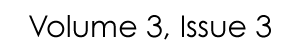
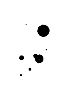
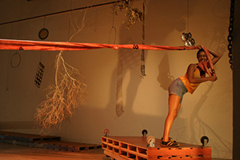
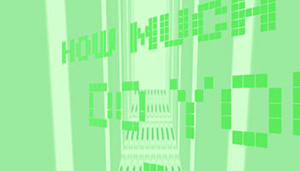
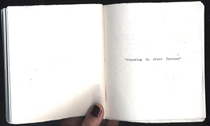

Strictly Speaking on Caroline Bergvall
Curated and Co-ordinated by Sophie Robinson

Featuring papers from:
Caroline Bergvall
Sophie Robinson
Nathan Brown
cris cheek
Laura Goldstein
Majene Mafe
Poetic Economies of Performance: Part 2
Curated by Elizabeth-Jane Burnett
Featuring poems and papers from:
Elizabeth-Jane Burnett
Emily Carr
Christina Continelli
David Emanuel
Jennifer Karmin
Shannon Maguire
Julia Lee Barclay
Amy Sara Carroll
Laylage Courie
Bonnie Emerick
Featuring:
Jessica Wilkinson: The Errand Wanderer and the Book-Worm: A Short Reading of Susan Howe’s Souls of the Labadie Tract
Featuring:
Jessica Wilkinson: The Errand Wanderer and the Book-Worm: A Short Reading of Susan Howe’s Souls of the Labadie Tract
recent publications
news and announcements
to our favourite sites
to find what you're looking for
Curated and Co-ordinated by Laura Hinton

from 'Peforming Objects In The Subworld', San Francisco.
Photograph by Donald Swearingen
Featuring papers from:
Carla Harryman
Laura Hinton
Christine Hume
J. Darling
Carla Billitteri
Renee Gladman
Austin Publicover
Curated and Co-ordinated by John Sparrow

from nobody knows but you, by Aya Karpińska
Featuring:
Aya Karpińska
Katie Clapham
Becky Cremin
Simone Gilson

Featuring poems by:
Jessica Wilkinson
Shira Dentz
Karen Sandhu
Highlights from the HOW(ever) archives
selected by Redell Olsen
Cover of HOW(ever), Volume 3, No. 4 (January 1987)
Featuring highlighted work by:
Susan Gervitz
Hannah Weiner
Rosemarie Waldrop
Lydia Davis
HOW(ever) and HOW2 are presented on this web site with the permission of Kathleen Fraser, the publisher. These works are made available only for the purpose of private study, scholarship, or research. Subject to the foregoing limited permission, all written works appearing in these pages are the property of their authors and are covered by U.S. copyright law. For information about these works and any rights and permissions associated with them, please contact Kathleen Fraser